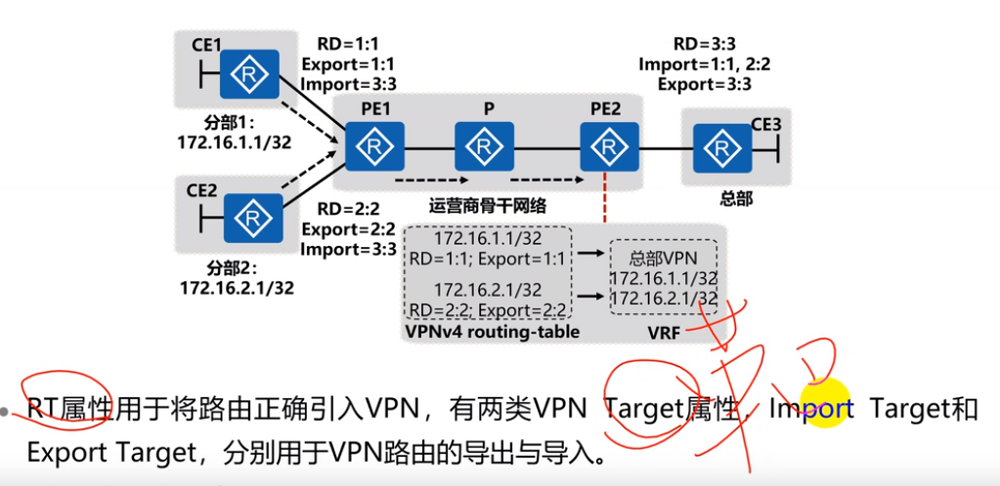

数据包 包括外部标签（mpls标签）和内部标签（MP-BGP标签）。
overlay VPN
sshl l2tp gre\ipsec ATM 等 ，2CE之间直接通过通讯，运营商不连接CE私网网络结构
peer to peer VPN p2p vpn
CE 与PE之间交换私网信息，由PE设备将私网信息在运营商网络总传播， 解决OVERLAYvpn 的静态 性质不合适大规模应用和部署。
PE上有多个不同VPN实例，并且与PE设备接口进行绑定，每个VRF（vpn路由转发表）都有对应的一个VPN实例，另外还有全局路由表（OSPF路由。）即公网路由表。
每个VPN之间相互隔离的，每个VPN有各自的VRF表。
RD 全局唯一标识 ，将VRF发布到全局路由表之前，使用RD标识和路由绑定，区分私冲突的网路由
RD可以识别一个CE对一个CE 1对1
一个CE对多个CE使用到VPN Target 路由靶向 1对多
两类VPN Target属性：
• Export Target：本地PE从直接相连Site学到IPv4路由后，转换为VPN-IPv4路由，并为这些路由设置Export Target属性。Export Target属性作为BGP的扩展团体属性随路由发布。
• Import Target：PE收到其它PE发布的VPN-IPv4路由时，检查其Export Target属性。当此属性与PE上某个VPN实例的Import Target匹配时，PE就把路由加入到该VPN实例中。

MP-BGP 多协议BGP 主要功能是传播 vpnv4（RD/RT+IPV4）路由，并且是单播。
1.PE之间可以通过跨跳传递。2.能够承载大量路由信息。3.可以传递RD RT IPV4路由协议。
数据包 包括外部标签（mpls标签）和内部标签（MP-BGP标签）。